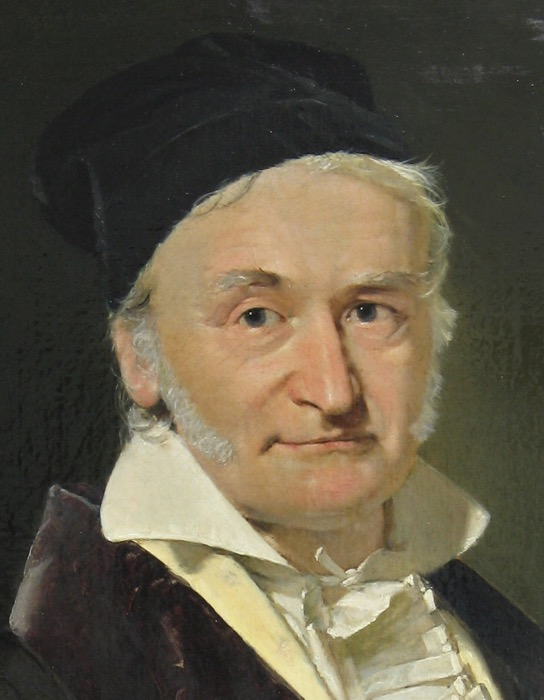

Contents – Part 4
The common thread of this part
One question runs through every section
How does a variable $Y$ depend on one or several variables $X$ – and how certain are we about this dependence?
Three steps:
- Describe – scatter plot, correlation, least-squares line, $R^2$ (residual and QQ-plot: appendix).
- Infer – standard errors, $t$-tests, confidence intervals and $p$-values for the coefficients (the tools of Part 3).
- Extend – several explanatory variables at once: multiple regression.
Running stories:
The lamp
How does the sales quantity react to the price? ($n=9$ stores; simple regression and inference)
Advertising and sales
$12$ stores, one budget: building up least squares; later $200$ markets, three media: multiple regression.
Learning objectives – Part 4
After this part you will be able to …
- compute and interpret covariance and correlation,
- explain least squares and how the OLS estimators follow,
- fit a simple regression by hand and in Python; interpret it (units, extrapolation),
- assess the fit with $R^2$ and know its limits,
- carry out $t$-tests, confidence intervals and $p$-values for regression coefficients,
- distinguish confidence and prediction intervals,
- interpret a multiple regression (“holding the others fixed”) and recognise confounding,
- use the $F$-test, adjusted $R^2$ and dummy variables.
Common thread: a coefficient is an estimate – report it with its uncertainty.
List of symbols (1/2)
| Symbol | Meaning | Symbol | Meaning |
|---|---|---|---|
| $X$, $Y$ | Explanatory / dependent variable | $(x_i, y_i)$ | Observation pair $i$ |
| $s_{xy}$ | Covariance of $X$ and $Y$ | $r_{xy}$ | Correlation coefficient (Pearson) |
| $\beta_0,\,\beta_1$ | Regression coefficients (true) | $\hat{\beta}_0,\,\hat{\beta}_1$ | Estimated coefficients |
| $u_i$ | Error term | $\hat{u}_i$ | Residual $y_i-\hat y_i$ |
| $\hat{y}_i$ | Fitted value | $h_i$ | Leverage value |
| $S_{xx},\,S_{yy},\,S_{xy}$ | Sums of squares / cross-products | TSS, ESS, RSS | Total, explained, residual sum of squares |
| $R^2$ | Coefficient of determination | $\bar R^2$ | Adjusted $R^2$ |
| $S(\beta_0,\beta_1)$ | Objective function of least squares | $p_i$, $z_i$ | Plotting position, normal quantile |
List of symbols (2/2)
| Symbol | Meaning | Symbol | Meaning |
|---|---|---|---|
| $\sigma^2$ | Variance of the error term | $\hat\sigma$ | Residual standard error |
| $\operatorname{SE}(\hat\beta_j)$ | Standard error of $\hat\beta_j$ | $T$ | $t$-statistic of a coefficient |
| $t_{1-\alpha/2,\,n-2}$ | Two-sided quantile, $t_{n-2}$ | $F_{t,n-2}$ | CDF of $t_{n-2}$ |
| $p$ | Number of explanatory variables | $n-p-1$ | Degrees of freedom (residuals) |
| $x_{ij}$ | Value of variable $j$ for obs. $i$ | $F$ | $F$-statistic |
| $D$ | Dummy variable ($0/1$) | $\operatorname{VIF}_j$ | Variance inflation factor |
| $x_{(i)}$, $\hat u_{(i)}$ | $i$-th smallest value (sorted) | $s_{\hat y}^2$, $s_{\hat u}^2$ | Explained and residual variance |
As in Part 3: $H_0$, $H_1$, $\alpha$, $p$-value and confidence level $1-\alpha$. (Context distinguishes the $p$-value from the number of explanatory variables $p$.)
Relationship between two metric variables
Research question
The aim is to investigate the relationship between two metrically scaled variables.
- Exogenous variable $X$: given from outside, assumed to be independent – also called the explanatory variable.
- Endogenous variable $Y$: dependent variable – also called the variable to be explained.
Regression – an example
Scenario
A new lamp is offered for testing in several stores at different prices. The price (in euros) and the sales quantity are observed.
| Price $x_i$ (EUR) | 80 | 85 | 90 | 95 | 100 | 105 | 110 | 115 | 120 |
| Quantity $y_i$ | 20 | 17 | 15 | 9 | 11 | 8 | 4 | 4 | 2 |
Assignment of the variables
The price was fixed in every store and not negotiable. Therefore
- the price is the exogenous variable $X$,
- the quantity is the endogenous variable $Y$ (result of buying behaviour, depending on price).
Price-sales and demand function
Price-sales function
The functional relationship $Y = f(X)$ we are looking for is called the price-sales function. It answers the question: What quantity is sold at a given price?
Demand function
The inverse function $X = f^{-1}(Y)$ is called the demand function. It answers the reverse question: At what price can a fixed quantity be sold?
Regression always has a direction: we explain $Y$ by $X$, not the other way round.
Regression – a warning
| Price $x_i$ (EUR) | 80 | 85 | 90 | 95 | 100 | 105 | 110 | 115 | 120 |
| Quantity $y_i$ | 20 | 17 | 15 | 9 | 11 | 8 | 4 | 4 | 2 |
Warning
- Do not sort!
The values $x_i$ and $y_i$ must not be sorted independently of each other (unlike the quantiles of Part 1). - Pairs belong together.
Each pair $(x_i, y_i)$ comes from the same observation (here: from the same store) – the link price $\leftrightarrow$ quantity must not be broken.
Scatter plot
Lamp example: price and sales quantity
Hover over a point: each point is one store.
Idea
A scatter plot gives a first visual overview of the relationship between two metric variables $X$ and $Y$.
- Each observation $(x_i, y_i)$ is plotted as a single point.
- The exogenous value $x_i$ (price) is on the $x$-axis, the endogenous value $y_i$ (quantity) on the $y$-axis.
- The cloud shows direction, strength and form of the relationship – here: falling, strong, roughly linear.
Covariance: how do we measure the direction of a relationship?
Idea: four quadrants
The lines $\bar{x} = 100$ and $\bar{y} = 10$ split the lamp data into four quadrants. For every point form the product $(x_i - \bar{x})(y_i - \bar{y})$:
- top right, bottom left: product $> 0$
- top left, bottom right: product $< 0$
Most products are negative (red): their sum – and hence the covariance – is negative.
Covariance
Idea
The covariance $s_{xy}$ measures the joint variability of two metric variables $X$ and $Y$.
Computation (sample covariance)
\[ s_{xy} \;=\; \operatorname{Cov}(X, Y) \;=\; \frac{1}{n-1} \sum_{i=1}^{n} (x_i - \bar{x})(y_i - \bar{y}), \qquad -\infty < s_{xy} < +\infty \]
Short names for the sums
$S_{xy} = \sum (x_i - \bar{x})(y_i - \bar{y})$: sum of cross-products $\Rightarrow$ $s_{xy} = S_{xy}/(n-1)$
$S_{xx} = \sum (x_i - \bar{x})^{2}$: sum of squares $\Rightarrow$ $s_x^{2} = S_{xx}/(n-1)$; $S_{yy}$ likewise for $y$
Same divisor $n-1$ as the sample variance of Part 1 – in fact $s_{xx}=s_x^2$: the covariance of a variable with itself is its variance.
Covariance – interpretation
Sign indicates the direction of the relationship
- $s_{xy} > 0$
- Positive (concordant) relationship. Larger values of $X$ tend to go together with larger values of $Y$.
- $s_{xy} < 0$
- Negative (discordant) relationship. Larger values of $X$ tend to go together with smaller values of $Y$.
- $s_{xy} = 0$
- No linear relationship. The cloud of points shows no recognisable linear structure.
Magnitude not directly interpretable
The covariance $s_{xy}$ has the unit “unit of $X$ $\cdot$ unit of $Y$” and depends on the scaling of the data.
Covariance – lamp example
Working table ($n = 9$; $\bar{x} = 900/9 = 100$, $\bar{y} = 90/9 = 10$)
| Price $x_i$ (EUR) | 80 | 85 | 90 | 95 | 100 | 105 | 110 | 115 | 120 | $\sum$ |
| Quantity $y_i$ | 20 | 17 | 15 | 9 | 11 | 8 | 4 | 4 | 2 | |
| $x_i - \bar{x}$ | $-20$ | $-15$ | $-10$ | $-5$ | $0$ | $5$ | $10$ | $15$ | $20$ | $0$ |
| $y_i - \bar{y}$ | $10$ | $7$ | $5$ | $-1$ | $1$ | $-2$ | $-6$ | $-6$ | $-8$ | $0$ |
| $(x_i-\bar{x})(y_i-\bar{y})$ | $-200$ | $-105$ | $-50$ | $5$ | $0$ | $-10$ | $-60$ | $-90$ | $-160$ | $\mathbf{-670}$ |
| $(x_i-\bar{x})^{2}$ | $400$ | $225$ | $100$ | $25$ | $0$ | $25$ | $100$ | $225$ | $400$ | $1500$ |
| $(y_i-\bar{y})^{2}$ | $100$ | $49$ | $25$ | $1$ | $1$ | $4$ | $36$ | $36$ | $64$ | $316$ |
Covariance
$s_{xy} = S_{xy}/(n - 1) = -670/8 = \mathbf{-83.75}$ (EUR $\cdot$ units): negative – price and quantity move in opposite directions
For later: the variances
$s_x^{2} = S_{xx}/8 = 1500/8 = 187.5$
$s_y^{2} = S_{yy}/8 = 316/8 = 39.5$
Exercise – online shop (1): scatter plot and covariance
Running exercise: these data accompany the whole part – the exercises build on each other.
Advertising $x$ and revenue $y$ of an online shop in five months (both in $1000$ EUR):
| Month $i$ | 1 | 2 | 3 | 4 | 5 |
|---|---|---|---|---|---|
| Advertising $x_i$ | 1 | 2 | 3 | 4 | 5 |
| Revenue $y_i$ | 21 | 26 | 24 | 30 | 29 |
- Draw the scatter plot; describe the relationship.
- Compute the means $\bar{x}$ and $\bar{y}$.
- Compute $s_{xy}$ with a working table.
Template for your drawing
Solution – online shop (1): scatter plot and covariance
(1) More advertising tends to go with more revenue: a positive, roughly linear relationship.
(2) Means
$\bar{x} = 15/5 = \mathbf{3}$, $\bar{y} = 130/5 = \mathbf{26}$
(3) Rule: $s_{xy} = \sum (x_i-\bar{x})(y_i-\bar{y}) / (n-1)$
| $i$ | $x_i$ | $y_i$ | $x_i-\bar{x}$ | $y_i-\bar{y}$ | $(x_i-\bar{x})(y_i-\bar{y})$ |
|---|---|---|---|---|---|
| 1 | 1 | 21 | $-2$ | $-5$ | $10$ |
| 2 | 2 | 26 | $-1$ | $0$ | $0$ |
| 3 | 3 | 24 | $0$ | $-2$ | $0$ |
| 4 | 4 | 30 | $1$ | $4$ | $4$ |
| 5 | 5 | 29 | $2$ | $3$ | $6$ |
| $\sum$ | 15 | 130 | $0$ | $0$ | $S_{xy} = \mathbf{20}$ |
$s_{xy} = 20/(5 - 1) = \mathbf{5}$ ($1000$ EUR)$^{2}$: positive.
Correlation coefficient
Idea
The correlation coefficient $r_{xy}$ is a normalised covariance: it measures the strength and direction of the linear relationship between $X$ and $Y$ – independent of the units of measurement.
Computation
\[ r_{xy} \;=\; \frac{s_{xy}}{s_x \, s_y} \;=\; \operatorname{Cov}\!\left( \frac{X-\bar{x}}{s_x},\; \frac{Y-\bar{y}}{s_y} \right) \qquad -1 \le r_{xy} \le +1 . \]
Reading
$r_{xy}$ is the covariance of the $z$-standardised variables. Dividing by $s_x s_y$ cancels out the units.
Correlation coefficient – strength of the relationship
$r = 0.95$
$r = 0.6$
$r = 0$
$r = -0.8$
Explore
Rule of thumb
| Range | Interpretation |
|---|---|
| $|r_{xy}| > 0.8$ | strong correlation |
| $0.5 \le |r_{xy}| \le 0.8$ | moderate correlation |
| $|r_{xy}| < 0.5$ | weak correlation |
$r_{xy} = \pm 1$: all points exactly on a line.
Lamp example
$s_x = \sqrt{187.5} = 13.6931$, $s_y = \sqrt{39.5} = 6.2849$
$r_{xy} = \dfrac{-83.75}{13.6931 \cdot 6.2849} = \mathbf{-0.9732}$
strongly negative: the higher the price, the fewer lamps are sold.
Exercise – online shop (2): correlation coefficient
Known from exercise (1)
$n = 5$, $\bar{x} = 3$, $\bar{y} = 26$, $s_{xy} = 5$, $S_{xy} = 20$
$x_i - \bar{x}$: $-2,\ -1,\ 0,\ 1,\ 2$
$y_i - \bar{y}$: $-5,\ 0,\ -2,\ 4,\ 3$
- Compute $S_{xx}$ and $S_{yy}$ from the deviations.
- Compute $s_x$, $s_y$ and $r_{xy}$; check the result with $S_{xy} / \sqrt{S_{xx}\,S_{yy}}$.
- Assess the strength and direction of the relationship.
Tools
Sum of squares: $S_{xx} = \sum (x_i - \bar{x})^{2}$
Standard deviation: $s_x = \sqrt{S_{xx} / (n-1)}$
Correlation: $r_{xy} = \dfrac{s_{xy}}{s_x\,s_y}$
Rule of thumb: $|r_{xy}| > 0.8$ strong, $0.5$ to $0.8$ moderate
Solution – online shop (2): correlation coefficient
(1) Rule: square the deviations and add up
$S_{xx} = (-2)^{2} + (-1)^{2} + 0^{2} + 1^{2} + 2^{2} = \mathbf{10}$
$S_{yy} = (-5)^{2} + 0^{2} + (-2)^{2} + 4^{2} + 3^{2} = \mathbf{54}$
(3) Assessment
$|r_{xy}| = 0.86 > 0.8$: a strong positive linear relationship. Whether advertising causes the revenue cannot be read from $r_{xy}$.
(2) Rule: $r_{xy} = s_{xy} / (s_x\,s_y)$
$s_x = \sqrt{10/4} = 1.5811$, $s_y = \sqrt{54/4} = 3.6742$
$r_{xy} = \dfrac{5}{1.5811 \cdot 3.6742} = \mathbf{0.8607}$
Check: $\dfrac{S_{xy}}{\sqrt{S_{xx}\,S_{yy}}} = \dfrac{20}{\sqrt{10 \cdot 54}} = 0.8607$ $\checkmark$
The covariance $5$ depends on the units, the correlation $0.86$ does not.
Correlation coefficient – limitations
No causal relationship
Correlation is symmetric, $r_{xy} = r_{yx}$: from $r_{xy}$ alone one cannot tell which variable is $X$ and which is $Y$.
Spurious correlation possible
A common third variable can produce $r_{xy} \ne 0$ – e.g. ice-cream sales and sunburns, both driven by sunshine (later: confounding in multiple regression).
Remember
A high value of $|r_{xy}|$ is a statistical finding, not a causal statement.
Only linear relationships
$r = 0$
A clear U-shape – and yet $r_{xy} = 0$. Always look at the scatter plot first.
Covariance and correlation with Python
Data
import pandas as pd
import matplotlib.pyplot as plt
df = pd.DataFrame({"price": [80, 85, 90, 95, 100, 105, 110, 115, 120],
"quantity": [20, 17, 15, 9, 11, 8, 4, 4, 2]})
plt.scatter(df["price"], df["quantity"]) # scatter plot
Covariance and correlation
df["price"].cov(df["quantity"]) # -83.75 (divides by n-1) df["price"].corr(df["quantity"]) # -0.9732 (Pearson is the default)
Roadmap: how do we find the best line through a cloud of points?
advertising
and revenue
lines:
which one fits?
mathematically
distances:
residuals
and add up
minimisation
problem
covariance
and variance
interpret
yourself
The method of least squares is not an isolated formula but the logical answer to a simple question: How do we find the best line through a cloud of points?
From correlation to regression
Correlation: how closely do the points lie?
Regression: how many units per euro?
| Correlation (so far) | Regression (now) | |
|---|---|---|
| Question | How close is the relationship? | How does $Y$ change with $X$? Which $Y$ do we expect? |
| Roles | symmetric: $r_{xy} = r_{yx}$ | directed: $X$ explains $Y$ |
| Result | one number without a unit | a line $\hat{y} = \hat{\beta}_0 + \hat{\beta}_1\,x$, $\hat{\beta}_1$ in units per euro |
As $r_{xy}$ has no unit, it cannot answer “how many units more or less?” – only the slope $\hat{\beta}_1$ of a line can.
Starting question: how is advertising related to revenue?
Situation
Twelve stores: advertising budget and revenue of the last quarter (both in $1000$ EUR). We develop the method on these data.
| Store $i$ | 1 | 2 | 3 | 4 | 5 | 6 | 7 | 8 | 9 | 10 | 11 | 12 |
|---|---|---|---|---|---|---|---|---|---|---|---|---|
| Advertising $x_i$ (1000 EUR) | 1 | 3 | 4 | 5 | 6 | 8 | 8 | 9 | 10 | 11 | 12 | 13 |
| Revenue $y_i$ (1000 EUR) | 33 | 30 | 37 | 33 | 38 | 41 | 39 | 43 | 45 | 40 | 42 | 47 |
- $x$: exogenous, $y$: endogenous
- each pair $(x_i, y_i)$: the same store
- $r_{xy} = 0.88$: strongly positive
Helper values: $\bar{x} = 7.5$, $\bar{y} = 39$, $S_{xy} = 186$, $S_{xx} = 155$, $S_{yy} = 288$
How much more revenue goes along with $1000$ EUR more advertising? Which revenue do we expect at $7000$ EUR?
In “Multiple regression” the question returns – with $200$ markets and three media.
Which line describes the data best?
Four candidates
- A
- too steep
- B
- too flat
- C
- too high
- D
- fits well – by eye
Question for you
Which line would you choose – and why?
Judging by eye is subjective: we need a transparent criterion.
How do we describe a straight line mathematically?
Equation of a line
\[ y \;=\; \beta_0 \;+\; \beta_1\, x \]
Intercept $\beta_0$
Value of $y$ at $x = 0$, where the line crosses the $y$-axis (here: $2$).
Slope $\beta_1$
Change of $y$ when $x$ increases by one unit: from $x=1$ ($y=5$) to $x=2$ ($y=8$), i.e. $+3$.
The coefficients enter with power $1$ – hence linear regression. Wanted: the $\beta_0$ and $\beta_1$ that fit the twelve stores best.
Observed value, fitted value and residual
Store 9 ($x_9 = 10$), line D
- observed: $y_9 = 45$
- fitted: $\hat{y}_9 = 30 + 1.2\cdot 10 = 42$
- residual: $\hat{u}_9 = 45 - 42 = 3$
In general
Fitted value: $\hat{y}_i = \hat{\beta}_0 + \hat{\beta}_1\,x_i$
Residual: $\hat{u}_i = y_i - \hat{y}_i$, the vertical distance between point and line: above the line $\hat{u}_i > 0$, below $\hat{u}_i < 0$.
The “hat” marks values computed from the data. Some textbooks write $e_i$ for $\hat{u}_i$.
Exercise – online shop (3): residuals of two lines
Two employees propose a line for the online shop:
Line 1: $\hat{y} = 23 + x$
Line 2: $\hat{y} = 20 + 2\,x$
- Compute $\hat{y}_i$ and $\hat{u}_i$ for both lines.
- Add up the residuals of each line.
- Which line fits better by eye? Does the sum of the residuals show it?
| Month $i$ | 1 | 2 | 3 | 4 | 5 |
|---|---|---|---|---|---|
| $x_i$ | 1 | 2 | 3 | 4 | 5 |
| $y_i$ | 21 | 26 | 24 | 30 | 29 |
Solution – online shop (3): residuals of two lines
(1), (2) Rule: $\hat{u}_i = y_i - \hat{y}_i$, then add up
| Month $i$ | 1 | 2 | 3 | 4 | 5 | $\sum$ |
|---|---|---|---|---|---|---|
| $y_i$ | 21 | 26 | 24 | 30 | 29 | |
| Line 1: $\hat{y}_i = 23 + x_i$ | 24 | 25 | 26 | 27 | 28 | |
| Line 1: $\hat{u}_i = y_i - \hat{y}_i$ | $-3$ | $1$ | $-2$ | $3$ | $1$ | $\mathbf{0}$ |
| Line 2: $\hat{y}_i = 20 + 2x_i$ | 22 | 24 | 26 | 28 | 30 | |
| Line 2: $\hat{u}_i = y_i - \hat{y}_i$ | $-1$ | $2$ | $-2$ | $2$ | $-1$ | $\mathbf{0}$ |
green: $\hat{u}_i > 0$, red: $\hat{u}_i < 0$ – they cancel out.
Line 1
Line 2
(3) Line 2 fits visibly better
Yet both sums are $0$: the sum of the residuals does not detect the difference.
Why not simply add up the residuals?
Obvious idea
We look for the line whose residuals are as small as possible overall. “Small overall” could mean: the sum of the residuals $\sum_{i=1}^{n} \hat{u}_i$ should be as small as possible.
The problem
Positive and negative residuals cancel out – as for both lines of exercise (3). Line D of the stores: $1.8 - 3.6 + 2.2 - 3.0 + \ldots + 1.4 = 0$, although not a single point lies on the line.
Known from the variance (Part 1)
Deviations from the mean always add up to zero: $\sum_{i=1}^{n} (x_i - \bar{x}) = 0$. Example: $2,\,4,\,9$ with $\bar{x} = 5$, deviations $-3,\,-1,\,+4$.
This is why the variance squares the deviations. But first, let us check: does the problem occur for other lines, too?
The sum of residuals cannot tell good from bad lines
Line A: residuals $7$, $0$, $5$, $-1$, $2$, $1$, $-1$, $1$, $1$, $-6$, $-6$, $-3$ – sum $0$
| Line | $\sum \hat{u}_i$ | |
|---|---|---|
| A | too steep | $0$ |
| B | too flat | $0$ |
| C | too high | $-60$ |
| D | fits well | $0$ |
Two findings
- A, B and D: the same sum $0$, although A and B fit badly.
- The higher a line lies, the more negative the sum: “smallest sum” would be absurd.
Exercise – online shop (4): squaring the residuals
Residuals $\hat{u}_i$ from exercise (3)
| Month $i$ | 1 | 2 | 3 | 4 | 5 |
|---|---|---|---|---|---|
| Line 1 ($23 + x$) | $-3$ | $1$ | $-2$ | $3$ | $1$ |
| Line 2 ($20 + 2x$) | $-1$ | $2$ | $-2$ | $2$ | $-1$ |
- Square the residuals: $\hat{u}_i^{\,2}$.
- Add up per line: $S = \sum \hat{u}_i^{\,2}$.
- Which line has the smaller sum? Does this agree with your judgement by eye?
Solution – online shop (4): squaring the residuals
(1), (2) Rule: square, then add up: $S = \sum \hat{u}_i^{\,2}$
| Month $i$ | 1 | 2 | 3 | 4 | 5 | $\sum$ |
|---|---|---|---|---|---|---|
| Line 1: $\hat{u}_i$ | $-3$ | $1$ | $-2$ | $3$ | $1$ | $0$ |
| Line 1: $\hat{u}_i^{\,2}$ | $9$ | $1$ | $4$ | $9$ | $1$ | $\mathbf{24}$ |
| Line 2: $\hat{u}_i$ | $-1$ | $2$ | $-2$ | $2$ | $-1$ | $0$ |
| Line 2: $\hat{u}_i^{\,2}$ | $1$ | $4$ | $4$ | $4$ | $1$ | $\mathbf{14}$ |
(3) Line 2 has the smaller sum
$S_2 = 14 < 24 = S_1$ – as judged by eye. After squaring nothing cancels out: the better line has the smaller sum of squares.
Line 1
Line 2
Area of a square $= \hat{u}_i^{\,2}$ (hover over a square)
Gauss: the method of least squares

G. Biermann after C. A. Jensen,
public domain
The idea – ordinary least squares (OLS)
- Square the residuals: nothing cancels out.
- Add up the squares: $\sum \hat{u}_i^{\,2}$.
- Choose the line with the smallest sum.
Exactly what you did in exercise (4)
Line 2 has the smaller sum ($14 < 24$) – and it fits better.
A little history
Gauss (Göttingen) said he had used the method since 1795. The first to publish it was Legendre (1805), Gauss followed in 1809 – a famous priority dispute.
Squaring the residuals of the twelve stores
Squared residuals
\[ \hat{u}_i^{\,2} \;=\; \bigl(y_i - \hat{y}_i\bigr)^{2} \]
| Line D, store | 1 | 2 | 3 | 4 | 5 | 6 | 7 | 8 | 9 | 10 | 11 | 12 | Sum |
|---|---|---|---|---|---|---|---|---|---|---|---|---|---|
| $\hat{u}_i$ | $1.8$ | $-3.6$ | $2.2$ | $-3.0$ | $0.8$ | $1.4$ | $-0.6$ | $2.2$ | $3.0$ | $-3.2$ | $-2.4$ | $1.4$ | $0$ |
| $\hat{u}_i^{\,2}$ | $3.24$ | $12.96$ | $4.84$ | $9.00$ | $0.64$ | $1.96$ | $0.36$ | $4.84$ | $9.00$ | $10.24$ | $5.76$ | $1.96$ | $\mathbf{64.8}$ |
Advantages of squaring
- All terms are $\ge 0$: nothing cancels out.
- Large deviations count disproportionately: $3.6^{2} = 12.96$, but $0.6^{2} = 0.36$.
- The sum is easy to minimise (calculus).
The same trick as for the variance
$s^{2} = \frac{1}{n-1}\sum (x_i - \bar{x})^{2}$ uses squared deviations from the mean. Here: squared deviations from a line.
Flip side: a single point far away can pull the line strongly – see “leverage” in Appendix A.4.
Squared residuals as areas
Construction
- Each red residual becomes the side of a square: side length $|\hat{u}_i|$, area $\hat{u}_i^{\,2}$.
- The sum of all areas is the sum of squared residuals, for line D: $\sum \hat{u}_i^{\,2} = 64.8$.
The best line is the one for which the sum of these square areas is as small as possible.
Scaling: both axes are in $1000$ EUR and one unit has the same length on both axes. Only then are the squares really squares and their areas comparable.
Comparison: a poorly fitting line and the best line
A: $\sum \hat{u}_i^{\,2} = \mathbf{164.0}$
D: $\sum \hat{u}_i^{\,2} = \mathbf{64.8}$
| Line | $\sum \hat{u}_i^{\,2}$ |
|---|---|
| A | $164.0$ |
| B | $120.6$ |
| C | $364.8$ |
| D | $\mathbf{64.8}$ |
The sum of squares separates good from bad lines. Is there an even better line than D?
The minimisation problem: the objective function
Sum of squared residuals for arbitrary values $\beta_0$ and $\beta_1$
\[ S(\beta_0,\beta_1) = \sum_{i=1}^{n}\bigl(y_i - \beta_0 - \beta_1 x_i\bigr)^{2} = \sum_{i=1}^{n}\Bigl(y_i - \underbrace{(\beta_0 + \beta_1 x_i)}_{=\,\hat{y}_i}\Bigr)^{2} = \sum_{i=1}^{n}\hat{u}_i^{\,2} \]
E.g. online shop: $S(23,\,1) = 24$, $S(20,\,2) = 14$; stores: $S(24,\,2) = 164.0$ (A), $S(30,\,1.2) = 64.8$ (D).
Wanted: the minimum
\[ (\hat{\beta}_0,\hat{\beta}_1) \;=\; \underset{\beta_0,\,\beta_1}{\arg\min}\; \sum_{i=1}^{n}\bigl(y_i - \beta_0 - \beta_1 x_i\bigr)^{2} \]
The coefficient values with the smallest sum of squared residuals.
At the minimum the derivative with respect to $\beta_0$ ($\beta_1$ fixed) and with respect to $\beta_1$ ($\beta_0$ fixed) is zero: the partial derivatives.
From the minimisation problem to the OLS estimator in four steps
equations
for $\beta_0$
solve for $\beta_1$
Step 4 in detail: what does “insert into (II)” mean?
(II) written out and divided by $-2$: $\sum x_i\,(y_i - \beta_0 - \beta_1 x_i) = 0$ – two unknowns, $\beta_0$ and $\beta_1$.
Insert $\beta_0 = \bar{y} - \beta_1\bar{x}$ from step 3: $\sum x_i\,\bigl(y_i - (\bar{y} - \beta_1\bar{x}) - \beta_1 x_i\bigr) = 0$
Only $\beta_1$ is left $\Rightarrow$ solve for $\beta_1$: the formula top right.
The OLS estimator of the slope
Solution of the minimisation problem
\[ \hat{\beta}_1 \;=\; \frac{\sum_{i=1}^{n} (x_i - \bar{x})(y_i - \bar{y})}{\sum_{i=1}^{n} (x_i - \bar{x})^{2}} \;=\; \frac{S_{xy}}{S_{xx}} \]
Numerator $S_{xy}$
Products of the deviations from the respective means, added up.
- both above or both below the mean: product $> 0$
- one above, one below the mean: product $< 0$
Positive if the cloud of points rises.
Denominator $S_{xx}$
Squared deviations of the $x_i$ from their mean, added up.
- always $> 0$ (if the $x_i$ are not all equal)
- measures the spread of the explanatory variable
Do the numerator and the denominator look familiar?
The link to covariance and variance
Sample covariance (Section 1)
\[ s_{xy} \;=\; \orange{\frac{1}{n-1}} \sum_{i=1}^{n} (x_i - \bar{x})(y_i - \bar{y}) \]
Sample variance of $x$ (Part 1)
\[ s_x^{2} \;=\; \orange{\frac{1}{n-1}} \sum_{i=1}^{n} (x_i - \bar{x})^{2} \]
The estimator, expanded by $\frac{1}{n-1}$
\[ \hat{\beta}_1 \;=\; \frac{\orange{\frac{1}{n-1}}\sum_{i=1}^{n}(x_i-\bar{x})(y_i-\bar{y})}{\orange{\frac{1}{n-1}}\sum_{i=1}^{n}(x_i-\bar{x})^{2}} \;=\; \frac{s_{xy}}{s_x^{2}} \]
The factor $\orange{\frac{1}{n-1}}$ appears in the numerator and the denominator and cancels. What remains are two familiar statistics.
$\displaystyle \hat{\beta}_1 = \frac{s_{xy}}{s_x^{2}}$
Slope $=$ covariance over variance
The slope of the regression line follows directly from two statistics we already know: the covariance of $x$ and $y$ and the variance of $x$.
Intuition
- $s_{xy}$ describes the joint variation of $x$ and $y$: its sign $=$ direction of the relationship.
- $s_x^{2}$ accounts for how much $x$ itself varies.
- Their ratio: how much co-movement of $y$ is there per unit of variation in $x$? That is the slope.
Twelve stores
$S_{xy} = \sum (x_i-\bar{x})(y_i-\bar{y}) = 186$, $S_{xx} = \sum (x_i-\bar{x})^{2} = 155$
$\hat{\beta}_1 = 186/155 = 1.2$
Via the statistics: $s_{xy} = 186/11 = 16.91$, $s_x^{2} = 155/11 = 14.09$ and hence also $\hat{\beta}_1 = 16.91/14.09 = 1.2$.
For the slope, the plain sums are enough.
Exercise – online shop (5): the OLS line of the online shop
Known from exercises (1) and (2)
$\bar{x} = 3$, $\bar{y} = 26$, $s_{xy} = 5$, $s_x^{2} = 2.5$ ($S_{xy} = 20$, $S_{xx} = 10$)
- Compute the slope $\hat{\beta}_1 = s_{xy}/s_x^{2}$ and check it with $S_{xy}/S_{xx}$.
- Compute the intercept $\hat{\beta}_0 = \bar{y} - \hat{\beta}_1\,\bar{x}$ (step 3) and write down the OLS line.
- Which of the two lines of exercise (3) is the OLS line? What does this mean for its sum of squared residuals $14$?
- Interpret the slope in words.
Solution – online shop (5): the OLS line of the online shop
(1) Rule: $\hat{\beta}_1 = s_{xy}/s_x^{2} = S_{xy}/S_{xx}$
$\hat{\beta}_1 = \dfrac{5}{2.5} = \mathbf{2}$, check: $\dfrac{20}{10} = 2$ $\checkmark$
(2) Rule: $\hat{\beta}_0 = \bar{y} - \hat{\beta}_1\,\bar{x}$
$\hat{\beta}_0 = 26 - 2 \cdot 3 = \mathbf{20}$ $\Rightarrow$ $\hat{y} = 20 + 2\,x$
(3) Line 2 is the OLS line
Line 2 of exercise (3): its sum of squares $14$ is the smallest possible (line 1: $24$).
(4) The slope in words
$+1000$ EUR advertising: $+2000$ EUR revenue on average.
Check: the line passes through the centroid $(\bar{x},\bar{y}) = (3,\,26)$, as $20 + 2 \cdot 3 = 26$.
Check with Python
x = pd.Series([1, 2, 3, 4, 5]); y = pd.Series([21, 26, 24, 30, 29]) ((y - (20 + 2 * x))**2).sum(), ((y - (23 + x))**2).sum() # 14 24: OLS line, line 1
Intercept, OLS line and the answer
Hover over the plot: fitted value $\hat y$ for any $x$.
From the first normal equation
$\hat{\beta}_0 = \bar{y} - \hat{\beta}_1\,\bar{x} \;\Longleftrightarrow\; \bar{y} = \hat{\beta}_0 + \hat{\beta}_1\,\bar{x}$: the line passes through the centroid $(\bar{x},\bar{y})$.
Twelve stores: both estimators
$\hat{\beta}_1 = S_{xy}/S_{xx} = 186/155 = \mathbf{1.2}$, $\hat{\beta}_0 = 39 - 1.2 \cdot 7.5 = \mathbf{30}$
Regression line: $\hat{y} = 30 + 1.2\,x$
Answer to the starting question
$1000$ EUR more advertising goes along with $1200$ EUR more revenue on average. At $7000$ EUR advertising: $\hat{y} = 30 + 1.2 \cdot 7 = \mathbf{38.4}$, i.e. $38\,400$ EUR.
Every line through $(\bar{x},\bar{y})$ has residual sum $0$ – also A, B and both lines of exercise (3).
Both estimators at a glance
The solution of the minimisation problem
\[ \hat{\beta}_1 \;=\; \frac{s_{xy}}{s_x^{2}} \;=\; \frac{S_{xy}}{S_{xx}} \qquad\qquad \hat{\beta}_0 \;=\; \bar{y} - \hat{\beta}_1\,\bar{x} \]
The estimated regression line
\[ \hat{y}_i \;=\; \hat{\beta}_0 + \hat{\beta}_1\, x_i \qquad\text{for the twelve stores:}\quad \hat{y}_i = 30 + 1.2\,x_i \]
Line D was the OLS line: no other line has a smaller sum of squared residuals than $64.8$.
The initial problem is solved: from $\bar{x}$, $\bar{y}$, $s_{xy}$ and $s_x^{2}$ we obtain the unique best line – best in the sense of the smallest sum of squared residuals.
Properties: through $(\bar{x},\bar{y})$; $\sum \hat{u}_i = 0$ and $\sum x_i\,\hat{u}_i = 0$ (first-order conditions); slope with the sign of $s_{xy}$, $0$ exactly if $s_{xy} = 0$. Derivation
Step by step to the regression line
Recipe
- Means $\bar{x}$, $\bar{y}$
- Covariance $s_{xy} = \frac{1}{n-1}\sum (x_i-\bar{x})(y_i-\bar{y})$
- Variance $s_x^{2} = \frac{1}{n-1}\sum (x_i-\bar{x})^{2}$
- Slope $\hat{\beta}_1 = s_{xy} / s_x^{2}$
- Intercept $\hat{\beta}_0 = \bar{y} - \hat{\beta}_1 \bar{x}$
- Line $\hat{y} = \hat{\beta}_0 + \hat{\beta}_1 x$
Means first: all further steps need them.
Working table for steps 2 and 3
| $i$ | $x_i$ | $y_i$ | $x_i-\bar{x}$ | $y_i-\bar{y}$ | $(x_i-\bar{x})(y_i-\bar{y})$ | $(x_i-\bar{x})^{2}$ |
|---|---|---|---|---|---|---|
| 1 | ||||||
| 2 | ||||||
| $\vdots$ | ||||||
| $n$ | ||||||
| $\sum$ | $0$ | $0$ | $S_{xy}\to s_{xy}$ | $S_{xx}\to s_x^{2}$ |
Check: the columns $x_i-\bar{x}$ and $y_i-\bar{y}$ add up to $0$.
Exercise – online shop (6): the OLS line for a second shop
The retailer opens a second online shop: five months, both variables in $1000$ EUR.
- Compute $\bar{x}$, $\bar{y}$, $S_{xy}$ and $S_{xx}$ with a working table.
- Determine $\hat{\beta}_1 = S_{xy}/S_{xx}$ and $\hat{\beta}_0 = \bar{y} - \hat{\beta}_1\bar{x}$; write down the regression line.
- Interpret the slope in words.
- Compute $\hat{y}_i$ and $\hat{u}_i$; check $\sum \hat{u}_i = 0$.
- Draw the line into the scatter plot.
| Month $i$ | 1 | 2 | 3 | 4 | 5 |
|---|---|---|---|---|---|
| Advertising $x_i$ | 2 | 4 | 5 | 6 | 8 |
| Revenue $y_i$ | 12 | 20 | 19 | 23 | 31 |
Solution (1/2) – online shop (6): working table and OLS estimates
(1) Rule: means first, then deviations, products and squares
| $i$ | $x_i$ | $y_i$ | $x_i - \bar{x}$ | $y_i - \bar{y}$ | $(x_i - \bar{x})(y_i - \bar{y})$ | $(x_i - \bar{x})^{2}$ |
|---|---|---|---|---|---|---|
| 1 | 2 | 12 | $-3$ | $-9$ | $27$ | $9$ |
| 2 | 4 | 20 | $-1$ | $-1$ | $1$ | $1$ |
| 3 | 5 | 19 | $0$ | $-2$ | $0$ | $0$ |
| 4 | 6 | 23 | $1$ | $2$ | $2$ | $1$ |
| 5 | 8 | 31 | $3$ | $10$ | $30$ | $9$ |
| $\sum$ | 25 | 105 | $0$ | $0$ | $S_{xy} = \mathbf{60}$ | $S_{xx} = \mathbf{20}$ |
$\bar{x} = 25/5 = \mathbf{5}$, $\bar{y} = 105/5 = \mathbf{21}$; check: the deviations add up to $0$.
(2) Rule: $\hat{\beta}_1 = S_{xy}/S_{xx}$, $\hat{\beta}_0 = \bar{y} - \hat{\beta}_1\,\bar{x}$
$\hat{\beta}_1 = 60/20 = \mathbf{3}$, $\hat{\beta}_0 = 21 - 3 \cdot 5 = \mathbf{6}$ $\Rightarrow$ $\hat{y} = 6 + 3\,x$
(3) The slope in words
$1000$ EUR more advertising: $3000$ EUR more revenue (on average).
Solution (2/2) – online shop (6): residuals and graph
(5) The line passes through the centroid $(5,\,21)$.
(4) Rule: $\hat{y}_i = 6 + 3\,x_i$, $\hat{u}_i = y_i - \hat{y}_i$
| $i$ | $x_i$ | $y_i$ | $\hat{y}_i$ | $\hat{u}_i$ |
|---|---|---|---|---|
| 1 | 2 | 12 | $6 + 3 \cdot 2 = 12$ | $0$ |
| 2 | 4 | 20 | $6 + 3 \cdot 4 = 18$ | $2$ |
| 3 | 5 | 19 | $6 + 3 \cdot 5 = 21$ | $-2$ |
| 4 | 6 | 23 | $6 + 3 \cdot 6 = 24$ | $-1$ |
| 5 | 8 | 31 | $6 + 3 \cdot 8 = 30$ | $1$ |
| $\sum$ | $\mathbf{0}$ $\checkmark$ |
For comparison: the first shop
$\hat{y} = 20 + 2\,x$ (exercise (5)): there $1000$ EUR more advertising goes with $2000$ EUR, here with $3000$ EUR more revenue.
How do we interpret the slope?
Slope $\hat{\beta}_1 = 1.2$
If $x$ increases by one unit, the value of $y$ on the line changes by $\hat{\beta}_1$ units. Here: advertising $5 \to 10$ (in $1000$ EUR), $\hat{y}$ rises from $36$ to $42$, i.e. by $6=5\cdot1.2$. Each additional $1000$ euros of advertising goes along with $1200$ euros more revenue on average.
No causal statement
The line describes a statistical association. It does not follow that advertising causes the revenue – e.g. stores in busy locations might both advertise more and sell more.
How do we interpret the intercept?
Hover over the plot: fitted value inside or outside the observed range.
Intercept $\hat{\beta}_0 = 30$
$\hat{\beta}_0 = \hat{y}\,\big|_{x=0}$: the value of the line at $x = 0$ – a quarterly revenue of $30\,000$ euros without advertising, according to the line.
Careful
$x = 0$ was not observed (data: $1$ to $13$): the line is extrapolated. If $x = 0$ lies far from the data, $\hat{\beta}_0$ merely fixes the height of the line.
Interpret the slope as an average change within the data range – and the intercept only if $x=0$ is a meaningful value that lies near the data.
Interpretation at a glance – and predictions
$\hat{y} = \textcolor{#ffc95c}{30} + \textcolor{#8ee6b4}{1.2}\,x$ (twelve stores)
- $\orange{\hat{\beta}_0}$
- height of the line at $x = 0$
- $\green{\hat{\beta}_1}$
- $\Delta \hat{y} = \hat{\beta}_1 \cdot \Delta x$ ($\Delta$: change), e.g. $\Delta x = 5$: $\Delta \hat{y} = 6$
Prediction: insert $x$ into the line
$x = 9.5$: $\hat{y} = 30 + 1.2 \cdot 9.5 = 41.4$ – interpolation (inside the observed range $1$ to $13$): plausible
$x = 25$: $\hat{y} = 30 + 1.2 \cdot 25 = 60$ – extrapolation: linearity was never observed there!
The same change $\Delta x$ gives the same $\Delta\hat{y}$ everywhere – a line has only one slope.
Second example: the lamp – calculation
From the working table of Section 1 (slide “Covariance and correlation – lamp example”): $n=9$, $\sum(x_i-\bar x)(y_i-\bar y)=-670$, $\sum(x_i-\bar x)^2=1500$.
Steps 1 to 3
$\bar{x} = 900/9 = 100$, $\bar{y} = 90/9 = 10$
$s_{xy} = -670/8 = -83.75$
$s_x^{2} = 1500/8 = 187.5$
Steps 4 to 6
$\hat{\beta}_1 = -83.75 / 187.5 = \mathbf{-0.4467}$ ($=-670/1500$)
$\hat{\beta}_0 = 10 - (-0.4467)\cdot 100 = \mathbf{54.67}$
$\hat{y} = 54.67 - 0.4467\,x$
Estimated regression line for the lamp
\[ \hat y_i = 54.67-0.4467\,x_i \]
The negative covariance makes the slope negative – the higher the price, the lower the fitted sales quantity.
The lamp: interpreting the coefficients
Hover over a point: fitted value and residual.
Slope $\hat{\beta}_1 = -0.4467$
If the price rises by $1$ euro, the sales quantity falls on average by $0.4467$ units – or: a price increase of $10$ euros costs about $4.5$ lamps. A classical downward-sloping price-sales function.
Intercept $\hat{\beta}_0 = 54.67$
Formally the sales at a price of $0$ euros. This value lies far outside the observed range ($80$ to $120$ euros): here $\hat{\beta}_0$ has no substantive meaning. Statements outside the data range (extrapolation) are generally unreliable.
Linear regression with Python
Coefficients by hand (steps 2 to 5)
beta1 = df["price"].cov(df["quantity"]) / df["price"].var() # -0.4467 beta0 = df["quantity"].mean() - beta1 * df["price"].mean() # 54.6667
Regression with smf.ols() (ordinary least squares)
import statsmodels.formula.api as smf
reg = smf.ols("quantity ~ price", data=df).fit() # quantity explained by price
reg.params # Intercept 54.6667, price -0.4467
reg.resid.sum() # 0 (up to rounding): first-order condition
plt.scatter(df["price"], df["quantity"]); plt.xlim(0, 125); plt.ylim(0, 60)
plt.axline((0, reg.params["Intercept"]), slope=reg.params["price"])
smf.ols() solves the minimisation problem of this section; "y ~ x" reads “$y$ explained by $x$”.
Can you answer these questions?
- What does regression add to correlation – why a straight line?
- How is a line described mathematically?
- What do the intercept and the slope mean?
- Why do we need an objective criterion for the best line?
- What are residuals, and why are they squared?
- Which minimisation problem does least squares solve?
- Which four steps lead to the OLS estimators?
- Why is the slope the ratio of covariance and variance?
- How do you compute a regression line by hand for a few observations?
- How do you interpret the estimated coefficients – and what must you not read into them?
The OLS line is the line with the smallest sum of squared residuals – computed from $\bar{x}$, $\bar{y}$, $s_{xy}$ and $s_x^{2}$.
Exercise – interpreting coefficients and making predictions
Data: furniture store, six weeks (both in $1000$ EUR)
| Advertising $x_i$ | 2 | 4 | 6 | 8 | 10 | 12 |
| Weekly revenue $y_i$ | 44 | 49 | 58 | 62 | 61 | 71 |
Python gives the OLS line $\hat{y} = 40 + 2.5\,x$.
Tasks
- Interpret $\hat{\beta}_0 = 40$ and $\hat{\beta}_1 = 2.5$ in context (with units). Is $\hat{\beta}_0$ meaningful?
- What weekly revenue is expected for advertising of $5$ and of $30$ thousand euros? How reliable are the two predictions?
- By how much does the expected revenue change with $2000$ euros more advertising – from $4$ to $6$ and from $10$ to $12$?
- Advertising is now measured in euros instead of thousands of euros: what are $\hat{\beta}_0$ and $\hat{\beta}_1$? And if revenue is also measured in euros?
Solution (1/3) – interpreting coefficients and making predictions
Rule: $\hat{\beta}_1$ is the change of $\hat{y}$ per unit of $x$; $\hat{\beta}_0$ is the value of $\hat{y}$ at $x = 0$; a change $\Delta x$ gives $\Delta \hat{y} = \hat{\beta}_1 \cdot \Delta x$.
(1) Slope $\hat{\beta}_1 = 2.5$
Each additional $1000$ euros of advertising goes along with $2500$ euros more weekly revenue on average – a statistical association, not a proof of causality.
(1) Intercept $\hat{\beta}_0 = 40$
Revenue in a week without advertising according to the line: $40\,000$ euros. $x = 0$ was not observed (data: $2$ to $12$) but lies close: a rough orientation, strictly speaking an extrapolation.
(3) Change by $\Delta x = 2$
$\Delta \hat{y} = 2.5 \cdot 2 = \mathbf{5}$ (i.e. $5000$ euros) – in both cases:
$4 \to 6$: $\hat{y}$ from $40 + 2.5 \cdot 4 = 50$ to $55$
$10 \to 12$: $\hat{y}$ from $65$ to $70$
A line has the same slope everywhere: the increase does not depend on the starting level, and $\hat{\beta}_0$ plays no role.
Solution (2/3) – interpreting coefficients and making predictions
Hover over the plot: expected revenue for any $x$.
(2) Rule: insert $x$ into the line
$x = 5$: $\hat{y} = 40 + 2.5 \cdot 5 = \mathbf{52.5}$ ($52\,500$ euros)
$x = 30$: $\hat{y} = 40 + 2.5 \cdot 30 = \mathbf{115}$ ($115\,000$ euros)
$x = 5$: interpolation
Inside the observed range ($2$ to $12$): plausible – as an expected value, not as a certain value (residuals up to $\pm 4$).
$x = 30$: extrapolation
Far outside the data: whether the relationship is still linear there (saturation?) was never observed. Not reliable.
Solution (3/3) – interpreting coefficients and making predictions
(4) Rule: the unit of $x$ changes the slope, the unit of $y$ both coefficients
Advertising in euros, $x_{\text{EUR}} = 1000\,x$: $\hat{y} = 40 + \frac{2.5}{1000}\,x_{\text{EUR}}$, so $\hat{\beta}_1 = \mathbf{0.0025}$, $\hat{\beta}_0 = \mathbf{40}$ unchanged. Revenue also in euros (times $1000$): $\hat{y}_{\text{EUR}} = \mathbf{40\,000} + \mathbf{2.5}\,x_{\text{EUR}}$ – $2.50$ euros more revenue per euro of advertising: the same statement.
Check with Python
fs = pd.DataFrame({"adv": [2, 4, 6, 8, 10, 12], "revenue": [44, 49, 58, 62, 61, 71]})
reg = smf.ols("revenue ~ adv", data=fs).fit()
reg.params # 40.0 2.5
reg.predict(pd.DataFrame({"adv": [5, 30]})) # 52.5 115.0
smf.ols("revenue ~ I(1000 * adv)", data=fs).fit().params # 40.0 0.0025
The number $\hat{\beta}_1$ depends on the units – the substantive statement does not.
Exercise – a falling price–demand line
A retailer studies how the weekly demand $y$ (units sold) depends on the price $x$ (in euros) in five weeks:
| Price $x_i$ (EUR) | 10 | 12 | 14 | 16 | 18 |
| Units sold $y_i$ | 64 | 50 | 46 | 42 | 38 |
Given: $\bar x=14$, $\bar y=48$, $S_{xx}=\sum(x_i-\bar x)^2=40$, $S_{xy}=\sum(x_i-\bar x)(y_i-\bar y)=-120$.
- Compute $\hat\beta_1$ and $\hat\beta_0$ and write down the fitted line.
- Interpret $\hat\beta_1$ in one sentence. Is its sign plausible?
- Predict the demand at $15$ euros and at $42$ euros; judge both.
- Compute the residual of week 1, $(x_1,y_1)=(10,\,64)$. Above or below the line?
- Which Python command predicts the demand at $x=15$ from the fitted model
reg = smf.ols("units ~ price", data=dem).fit()?
Solution (1/2) – a falling price–demand line
(1) Coefficients and fitted line
\[ \hat\beta_1=\frac{S_{xy}}{S_{xx}}=\frac{-120}{40}=\mathbf{-3},\qquad \hat\beta_0=\bar y-\hat\beta_1\bar x=48-(-3)\cdot14=48+42=\mathbf{90}, \qquad \hat y=90-3\,x \]
(2) Interpretation
If the price rises by $1$ euro, the weekly demand falls on average by $3$ units. The negative sign is economically plausible: a downward-sloping price–demand line, as for the lamp.
Common mistake
Sign errors in $\hat\beta_0=\bar y-\hat\beta_1\bar x$: with a negative slope, minus times minus gives $48\mathbf{+}42$, not $48-42$.
Solution (2/2) – a falling price–demand line
(3) Predictions
$\hat y(15)=90-3\cdot15=\mathbf{45}$ units – inside the observed range $[10,18]$: plausible.
$\hat y(42)=90-3\cdot42=\mathbf{-36}$ units – worthless: a price of $42$ euros lies far outside $[10,18]$ (extrapolation), and a negative demand is impossible.
(4) Residual of week 1
$\hat y_1=90-3\cdot10=60$, $\hat u_1=y_1-\hat y_1=64-60=\mathbf{+4}$:
the point lies above the line.
(5) Prediction with Python
reg.predict(pd.DataFrame({"price": [15]})) # 45.0
The new data frame needs a column with the same name as the explanatory variable in the formula.
How much does the line explain?
Without $x$: predict $\bar{y} = 39$, $\sum (y_i - \bar{y})^{2} = \mathbf{288}$
With $x$: predict $\hat{y}_i$, $\sum \hat{u}_i^{\,2} = \mathbf{64.8}$
Guiding question: without $x$, $\bar{y}$ is the best guess for every store. How much better is the line?
The sum of squares falls from $288$ to $64.8$: the line “explains” $223.2/288 = \mathbf{77.5\,\%}$ of the variation.
Splitting one deviation into two parts
Store 12: $x_{12} = 13$, $y_{12} = 47$
- total deviation: $y_{12} - \bar{y} = 47 - 39 = 8$
- explained by the line: $\hat{y}_{12} - \bar{y} = 45.6 - 39 = 6.6$
- not explained (residual): $y_{12} - \hat{y}_{12} = 47 - 45.6 = 1.4$
In general
\[ \underbrace{y_i - \bar{y}}_{\green{\text{total}}} \;=\; \underbrace{\hat{y}_i - \bar{y}}_{\orange{\text{explained}}} \;+\; \underbrace{y_i - \hat{y}_i}_{\red{\text{residual}}} \]
Deviation from the average $=$ part explained by advertising $+$ rest.
Sum-of-squares decomposition: square and add up
Decomposition of the sums of squares (holds for the OLS line)
\[ \underbrace{\sum_{i=1}^{n} (y_i - \bar{y})^{2}}_{\green{\text{TSS (total)}}} \;=\; \underbrace{\sum_{i=1}^{n} (\hat{y}_i - \bar{y})^{2}}_{\orange{\text{ESS (explained)}}} \;+\; \underbrace{\sum_{i=1}^{n} \hat{u}_i^{\,2}}_{\red{\text{RSS (residual)}}} \]
| Store $i$ | 1 | 2 | 3 | 4 | 5 | 6 | 7 | 8 | 9 | 10 | 11 | 12 | Sum |
|---|---|---|---|---|---|---|---|---|---|---|---|---|---|
| $\green{(y_i - \bar{y})^{2}}$ | $36$ | $81$ | $4$ | $36$ | $1$ | $4$ | $0$ | $16$ | $36$ | $1$ | $9$ | $64$ | $\mathbf{288}$ |
| $\orange{(\hat{y}_i - \bar{y})^{2}}$ | $60.84$ | $29.16$ | $17.64$ | $9.00$ | $3.24$ | $0.36$ | $0.36$ | $3.24$ | $9.00$ | $17.64$ | $29.16$ | $43.56$ | $\mathbf{223.2}$ |
| $\red{\hat{u}_i^{\,2}}$ | $3.24$ | $12.96$ | $4.84$ | $9.00$ | $0.64$ | $1.96$ | $0.36$ | $4.84$ | $9.00$ | $10.24$ | $5.76$ | $1.96$ | $\mathbf{64.8}$ |
Twelve stores
$288 = 223.2 + 64.8$ $\checkmark$
Also called analysis of variance (ANOVA).
Careful
The decomposition holds for the sums, not for each store: store 1 has $36 \ne 60.84 + 3.24$.
Exercise – online shop (7): the sum-of-squares decomposition
Known
| Exercise (1): | $\bar{y} = 26$, $y_i - \bar{y}$: $-5,\ 0,\ -2,\ 4,\ 3$ |
| OLS line $\hat{y} = 20 + 2x$: | $\hat{y}_i$: $22,\ 24,\ 26,\ 28,\ 30$, $\hat{u}_i$: $-1,\ 2,\ -2,\ 2,\ -1$ |
- Compute TSS, ESS and RSS.
- Check: does $\text{TSS} = \text{ESS} + \text{RSS}$ hold?
- Does the decomposition also hold month by month?
$\text{TSS} = \sum (y_i - \bar{y})^{2}$ $\text{ESS} = \sum (\hat{y}_i - \bar{y})^{2}$ $\text{RSS} = \sum \hat{u}_i^{\,2}$
Solution – online shop (7): the sum-of-squares decomposition
(1) Rule: square the deviations and add up
| Month $i$ | 1 | 2 | 3 | 4 | 5 | Sum |
|---|---|---|---|---|---|---|
| $y_i - \bar{y}$ | $-5$ | $0$ | $-2$ | $4$ | $3$ | |
| $\green{(y_i - \bar{y})^{2}}$ | $25$ | $0$ | $4$ | $16$ | $9$ | $\text{TSS} = \mathbf{54}$ |
| $\hat{y}_i - \bar{y}$ | $-4$ | $-2$ | $0$ | $2$ | $4$ | |
| $\orange{(\hat{y}_i - \bar{y})^{2}}$ | $16$ | $4$ | $0$ | $4$ | $16$ | $\text{ESS} = \mathbf{40}$ |
| $\hat{u}_i$ | $-1$ | $2$ | $-2$ | $2$ | $-1$ | |
| $\red{\hat{u}_i^{\,2}}$ | $1$ | $4$ | $4$ | $4$ | $1$ | $\text{RSS} = \mathbf{14}$ |
(2) Check
$\text{TSS} = \text{ESS} + \text{RSS}$: $54 = 40 + 14$ $\checkmark$
($\text{TSS} = S_{yy} = 54$ as in exercise (2))
(3) Only for the sums
Month 1: $25 \ne 16 + 1$. The decomposition holds for the sums, not for each observation.
The decomposition and least squares
Why does the decomposition work?
Squaring $a + b$ with $a = \hat{y}_i - \bar{y}$, $b = \hat{u}_i$ gives $a^{2} + 2ab + b^{2}$. The mixed term vanishes in the sum:
\[ \sum (\hat{y}_i - \bar{y})\,\hat{u}_i \;=\; \hat{\beta}_1 \sum (x_i - \bar{x})\,\hat{u}_i \;=\; 0, \]
because the OLS residuals satisfy $\sum \hat{u}_i = 0$ and $\sum x_i \hat{u}_i = 0$ (first-order conditions).
For other lines it does not hold – line A: $620 + 164 \ne 288$.
What least squares achieves
\[ \underbrace{\text{TSS}}_{\text{fixed}} \;=\; \underbrace{\text{ESS}}_{\green{\text{maximal}}} \;+\; \underbrace{\text{RSS}}_{\red{\text{minimal}}} \]
- TSS depends only on the $y_i$.
- The OLS line makes RSS minimal.
- Hence the explained part $\text{TSS}-\text{RSS}$ ($=\text{ESS}$ for the OLS line) is maximal.
No other line explains a larger share of the variation of $y$ than the least-squares line.
The coefficient of determination $R^{2}$
Definition
\[ R^{2} \;=\; \frac{\orange{\text{ESS}}}{\green{\text{TSS}}} \;=\; 1 - \frac{\red{\text{RSS}}}{\green{\text{TSS}}} \qquad\qquad 0 \le R^{2} \le 1 \]
The share of the variation of $y$ that the regression on $x$ explains.
Twelve stores
\[ R^{2} = \frac{223.2}{288} = 1 - \frac{64.8}{288} = \mathbf{0.775} \]
$77.5\,\%$ of the variation in revenue is explained (linearly) by advertising, $22.5\,\%$ remains unexplained.
Also via variances
Dividing all sums of squares by $n - 1$:
\[ s_y^{2} = s_{\hat{y}}^{2} + s_{\hat{u}}^{2}, \qquad R^{2} = \frac{s_{\hat{y}}^{2}}{s_y^{2}} \]
(total variance $=$ explained variance $+$ residual variance; the factor cancels).
The extreme cases: $R^{2} = 1$ and $R^{2} = 0$
$R^{2} = 1$: perfect fit
All points lie on the line: $\text{RSS} = 0$. The entire variation of $y$ is explained.
$R^{2} = 0$: nothing explained
$\hat{\beta}_1 = 0$: the line runs horizontally at the level $\bar{y}$, $\text{ESS} = 0$. Knowing $x$ does not improve the prediction.
Move the sliders to leave the extreme cases: noise lowers $R^2$ from $1$, a trend raises it from $0$.
$R^{2}$ and the correlation coefficient
Step 1: the explained deviation – the intercept cancels
From $\bar{y} = \hat{\beta}_0 + \hat{\beta}_1 \bar{x}$ (line through the centroid):
$\hat{y}_i - \bar{y} = (\hat{\beta}_0 + \hat{\beta}_1 x_i) - (\hat{\beta}_0 + \hat{\beta}_1 \bar{x}) = \hat{\beta}_1 (x_i - \bar{x})$, so $\;\text{ESS} = \hat{\beta}_1^{\,2}\, S_{xx}$ (and $s_{\hat{y}}^{2} = \hat{\beta}_1^{\,2}\, s_x^{2}$).
Step 2: insert $\hat{\beta}_1 = S_{xy}/S_{xx}$
\[ R^{2} = \frac{\text{ESS}}{\text{TSS}} = \frac{\hat{\beta}_1^{\,2}\, S_{xx}}{S_{yy}} = \frac{S_{xy}^{2}}{S_{xx}\, S_{yy}} = \Bigl(\frac{S_{xy}}{\sqrt{S_{xx}S_{yy}}}\Bigr)^{2} = r_{xy}^{2} \]
In simple regression, $R^{2}$ is the square of the correlation coefficient. With several explanatory variables this no longer holds.
Twelve stores
$r_{xy} = \frac{186}{\sqrt{155 \cdot 288}} = 0.8803$,
$r_{xy}^{2} = 0.775 = R^{2}$ $\checkmark$
Also: $\text{ESS} = 1.2^{2} \cdot 155 = 223.2$.
What $R^{2}$ does – and does not – tell you
No direction
$\sqrt{R^{2}} = |r_{xy}|$: the sign is lost – only $r_{xy}$ and $\hat{\beta}_1$ show it.
A low $R^2$ does not prove …
that $x$ is irrelevant (the slope can still be clearly $\neq 0$, Section 5) or that $y$ does not depend on $x$ – only that a line explains little.
A high $R^2$ does not prove …
that $x$ causes $y$, or that predictions outside the data range work.
High $R^{2}$, yet the wrong model
Ten regions, advertising and revenue: $R^{2} = 0.81$ – yet the points clearly bend (residual analysis: Appendix A.3).
$R^{2}$ does not replace the residual plot.
Assessing $R^{2}$
Rule of thumb (used in this course)
| Value of $R^{2}$ | Assessment |
|---|---|
| $R^{2} < 0.6$ | weak fit |
| $0.6 \le R^{2} < 0.8$ | moderate fit |
| $R^{2} \ge 0.8$ | good fit |
Because $R^{2} = r_{xy}^{2}$, a correlation that looks high gives a much smaller $R^2$: $r_{xy} = 0.7$ yields only $R^{2} = 0.49$.
Our examples
| Twelve stores | $R^{2} = 0.775$ | moderate |
| Lamp | $R^{2} = 0.947$ | good |
| Ten regions | $R^{2} = 0.81$ | good – but curved! |
Context matters
What counts as “good” depends on the field: in finance or the social sciences an $R^2$ of $0.1$ can be valuable, in physics $0.95$ may be poor.
Exercise – online shop (8): computing and assessing $R^2$
Known
Exercise (7): $\text{TSS} = 54$, $\text{ESS} = 40$, $\text{RSS} = 14$ Exercise (2): $r_{xy} = 0.8607$
- Compute $R^{2}$ in two ways: via ESS and via RSS.
- Check the result with $r_{xy}$ from exercise (2).
- Interpret $R^{2}$ in words and assess the fit with the rule of thumb.
- True or false? “$R^2 = 0.74$ means that $74\,\%$ of the months lie exactly on the line.” Justify briefly.
Solution (1/2) – online shop (8): computing and assessing $R^2$
(1) Rule: $R^{2} = \text{ESS}/\text{TSS} = 1 - \text{RSS}/\text{TSS}$
\[ R^{2} = \frac{40}{54} = \mathbf{0.741} \quad\;\; R^{2} = 1 - \frac{14}{54} = 0.741 \]
(2) Rule: $R^{2} = r_{xy}^{2}$ (simple regression)
$0.8607^{2} = 0.741$ $\checkmark$
(3) Interpretation and assessment
$74\,\%$ of the variation of the monthly revenue is explained (linearly) by advertising, $26\,\%$ is not.
$0.6 \le 0.741 < 0.8$: a moderate fit.
Note: $r_{xy} = 0.86$ counts as strong, $R^{2} = 0.74$ only as moderate – two different rules of thumb.
Solution (2/2) – online shop (8): computing and assessing $R^2$
(4) False
$R^2$ is a share of variation, not a hit rate: here not a single month lies on the line (all residuals $\neq 0$), yet $R^2=0.74$.
Check with Python
shop = pd.DataFrame({"adv": [1, 2, 3, 4, 5], "revenue": [21, 26, 24, 30, 29]})
reg = smf.ols("revenue ~ adv", data=shop).fit()
reg.ssr, reg.centered_tss, reg.rsquared # 14.0 54.0 0.7407 (RSS, TSS, R^2)
The residuals sum to zero – a property of every least-squares line with intercept: $-1+2-2+2-1=0$.
Coefficient of determination – lamp example
Known from the working table
$S_{xy} = -670$, $S_{xx} = 1500$, $\hat{\beta}_1 = -0.4467$
Sums of squares
- $\text{TSS} = \sum (y_i - \bar{y})^{2}$ $= 10^{2} + 7^{2} + \ldots + (-8)^{2} = 316$
- $\text{ESS} = \hat{\beta}_1^{\,2}\, S_{xx}$ $= \bigl(\tfrac{-670}{1500}\bigr)^{2} \cdot 1500 = 299.27$
- $\text{RSS} = 316 - 299.27 = 16.73$ ($=\sum\hat u_i^{\,2}$)
Coefficient of determination
\[ R^{2} = \frac{299.27}{316} = 1 - \frac{16.73}{316} = \mathbf{0.9470} \]
Check: $r_{xy} = \frac{-670}{\sqrt{1500 \cdot 316}} = -0.9732$,
$r_{xy}^{2} = 0.9470$ $\checkmark$
Interpretation
About $95\,\%$ of the variation of the sales quantity across the stores is explained (linearly) by the price: a good fit. The sign (falling price-sales function) is in $\hat{\beta}_1 < 0$, not in $R^{2}$.
Coefficient of determination in Python
Python command
print(reg.summary()) # full output, incl. "R-squared: 0.947" reg.rsquared # 0.9470
Three ways to the same value
RSS = (reg.resid**2).sum() # 16.7333 TSS = ((df["quantity"] - df["quantity"].mean())**2).sum() # 316 1 - RSS / TSS # 0.9470 df["price"].corr(df["quantity"])**2 # simple regression only
summary() reports further quantities (standard errors, $t$-values, $p$-values) – they follow in Section “Inference”.
Exercise – from sums of squares to the correlation coefficient
Data: heating costs of a shop in five weeks
| Week $i$ | 1 | 2 | 3 | 4 | 5 |
|---|---|---|---|---|---|
| Mean outside temperature $x_i$ ($^\circ$C) | 0 | 3 | 6 | 9 | 12 |
| Heating costs $y_i$ (EUR per day) | 82 | 65 | 63 | 41 | 49 |
From Python: OLS line $\hat{y} = 78 - 3\,x$, $\text{TSS} = 1000$, $\text{RSS} = 190$.
Tasks
- Compute ESS and $R^{2}$; interpret $R^{2}$.
- Determine $r_{xy}$ from $R^{2}$ – justify the sign.
- Assess the fit with the rule of thumb.
- Check: recompute ESS via $\hat{\beta}_1^{\,2} S_{xx}$.
Solution (1/2) – from sums of squares to the correlation coefficient
(1) Rule: $\text{TSS} = \text{ESS} + \text{RSS}$
$\text{ESS} = \text{TSS} - \text{RSS} = 1000 - 190 = \mathbf{810}$
$R^{2} = \dfrac{\text{ESS}}{\text{TSS}} = \dfrac{810}{1000} = 1 - \dfrac{190}{1000} = \mathbf{0.81}$
$81\,\%$ of the variation of the heating costs is explained (linearly) by the outside temperature, $19\,\%$ remains unexplained.
(3) Assessment
$R^{2} = 0.81 \ge 0.8$: a good fit. With only $n = 5$ weeks the verdict is uncertain, though.
(2) Rule: $R^{2} = r_{xy}^{2}$, sign of $\hat{\beta}_1$
$|r_{xy}| = \sqrt{R^{2}} = \sqrt{0.81} = 0.9$
$r_{xy}$ and $\hat{\beta}_1$ always have the same sign; $\hat{\beta}_1 = -3 < 0$, hence
\[ r_{xy} = \mathbf{-0.9} \]
Common mistake
$R^{2}$ alone gives only $|r_{xy}|$. The sign is in $\hat{\beta}_1$ (or $s_{xy}$): the warmer, the lower the heating costs – a strong negative relationship.
Solution (2/2) – from sums of squares to the correlation coefficient
(4) Rule: $\text{ESS} = \hat{\beta}_1^{\,2}\, S_{xx}$
$\bar{x} = 30/5 = 6$; $x_i - \bar{x}$: $-6,\ -3,\ 0,\ 3,\ 6$; $S_{xx} = 36 + 9 + 0 + 9 + 36 = 90$; $\text{ESS} = (-3)^{2} \cdot 90 = \mathbf{810}$ $\checkmark$
Likewise TSS: $\bar{y} = 60$, $22^{2} + 5^{2} + 3^{2} + (-19)^{2} + (-11)^{2} = 1000$ $\checkmark$
With Python
hc = pd.DataFrame({"temp": [0, 3, 6, 9, 12], "cost": [82, 65, 63, 41, 49]})
reg = smf.ols("cost ~ temp", data=hc).fit()
reg.rsquared # 0.81
hc["temp"].corr(hc["cost"]) # -0.9
reg.ssr, reg.ess # 190.0 810.0 (careful: ssr = RSS, ess = ESS)
TSS and RSS give ESS and $R^{2}$; with the sign of $\hat{\beta}_1$ also $r_{xy}$.
Shortcut: three sums are enough
By hand we need $s_{xy}$, $s_x$, $s_y$, $r_{xy}$, $\hat{\beta}_1$, $\hat{\beta}_0$ and $R^{2}$. Can we do it with less work and fewer rounding errors?
The three basic sums (from the working table)
| $S_{xx} = \sum (x_i - \bar{x})^{2}$ | sum of squares of $x$ | numerator of the variance $s_x^{2}$ |
| $S_{yy} = \sum (y_i - \bar{y})^{2}$ | sum of squares of $y$ | $= \text{TSS}$ |
| $S_{xy} = \sum (x_i - \bar{x})(y_i - \bar{y})$ | sum of cross-products | numerator of the covariance $s_{xy}$ |
All key figures of simple regression can be computed from $S_{xx}$, $S_{yy}$ and $S_{xy}$ – the factors $1/(n-1)$ cancel.
Why the factor $1/(n-1)$ cancels
Slope (known)
\[ \hat{\beta}_1 = \frac{s_{xy}}{s_x^{2}} = \frac{\orange{\frac{1}{n-1}}\,S_{xy}}{\orange{\frac{1}{n-1}}\,S_{xx}} = \frac{S_{xy}}{S_{xx}} \]
Correlation coefficient
\[ r_{xy} = \frac{s_{xy}}{s_x\,s_y} = \frac{\orange{\frac{1}{n-1}}\,S_{xy}}{\sqrt{\orange{\frac{1}{n-1}}S_{xx}}\cdot\sqrt{\orange{\frac{1}{n-1}}S_{yy}}} \]
Combining the roots
\[ \sqrt{\tfrac{1}{n-1}S_{xx}}\cdot\sqrt{\tfrac{1}{n-1}S_{yy}} = \sqrt{\tfrac{1}{(n-1)^{2}}\,S_{xx}\,S_{yy}} = \orange{\tfrac{1}{n-1}}\sqrt{S_{xx}\,S_{yy}} \quad\Longrightarrow\quad r_{xy} = \frac{S_{xy}}{\sqrt{S_{xx}\,S_{yy}}} \]
Numerator and denominator contain the same factor, so it cancels – no matter whether one works with $1/(n-1)$ or with $1/n$.
All key figures from three sums
| Quantity | via the statistics | via the sums |
|---|---|---|
| Slope | $\hat{\beta}_1 = \dfrac{s_{xy}}{s_x^{2}}$ | $\hat{\beta}_1 = \dfrac{S_{xy}}{S_{xx}}$ |
| Intercept | $\hat{\beta}_0 = \bar{y} - \hat{\beta}_1 \bar{x}$ | (the same) |
| Correlation | $r_{xy} = \dfrac{s_{xy}}{s_x\,s_y}$ | $r_{xy} = \dfrac{S_{xy}}{\sqrt{S_{xx}\,S_{yy}}}$ |
| Coefficient of determination | $R^{2} = r_{xy}^{2}$ | $R^{2} = \dfrac{S_{xy}^{2}}{S_{xx}\,S_{yy}}$ |
| Explained sum of squares | $\text{ESS} = \hat{\beta}_1^{\,2}\,S_{xx}$ | $\text{ESS} = \hat{\beta}_1\,S_{xy}$ |
| Residual sum of squares | $\text{RSS} = \text{TSS} - \text{ESS}$ | $\text{RSS} = S_{yy} - \hat{\beta}_1\,S_{xy}$ |
$\text{ESS} = \hat{\beta}_1^{\,2}S_{xx} = \hat{\beta}_1 \cdot \frac{S_{xy}}{S_{xx}}\cdot S_{xx} = \hat{\beta}_1 S_{xy}$. $R^{2} = r_{xy}^{2}$ holds only in simple regression; $R^2=1-\text{RSS}/\text{TSS}$ also works in multiple regression (statsmodels: rsquared).
Example: the twelve stores from three sums
Basic sums
$S_{xy} = 186$
$S_{xx} = 155$
$S_{yy} = 288$
$\bar{x} = 7.5$, $\bar{y} = 39$
Everything else in a few lines
| $\hat{\beta}_1$ | $= 186 / 155 = \mathbf{1.2}$ |
| $\hat{\beta}_0$ | $= 39 - 1.2 \cdot 7.5 = \mathbf{30}$ |
| $r_{xy}$ | $= 186 / \sqrt{155 \cdot 288} = \mathbf{0.8803}$ |
| $R^{2}$ | $= 186^{2} / (155 \cdot 288) = 34\,596 / 44\,640 = \mathbf{0.775}$ |
| $\text{ESS}$ | $= 1.2 \cdot 186 = \mathbf{223.2}$ |
| $\text{RSS}$ | $= 288 - 223.2 = \mathbf{64.8}$ |
The same values as before – without $1/(n-1)$ factors and without roots of rounded variances.
Sums without a deviation table: the shift theorem
Shift theorem (computational formula; used in the derivation of the slope, Appendix A.1)
\[ S_{xy} = \sum x_i y_i - n\,\bar{x}\,\bar{y} \qquad S_{xx} = \sum x_i^{2} - n\,\bar{x}^{2} \qquad S_{yy} = \sum y_i^{2} - n\,\bar{y}^{2} \]
Instead of forming every deviation, add up the raw values (products, squares) and subtract the mean part once.
Check: online shop ($n = 5$, $\bar{x} = 3$, $\bar{y} = 26$)
$\sum x_i y_i = 21 + 52 + 72 + 120 + 145 = 410$
$S_{xy} = 410 - 5 \cdot 3 \cdot 26 = 20$ $\checkmark$
$S_{xx} = 55 - 5 \cdot 3^{2} = 10$ $\checkmark$
$S_{yy} = 3434 - 5 \cdot 26^{2} = 54$ $\checkmark$
Careful: rounding
The difference of two large numbers is sensitive to rounded means. Use $n\,\bar{x}\,\bar{y} = \frac{\sum x_i \sum y_i}{n}$ or unrounded means.
Correlation as a standardised slope
Transformation
\begin{align*} r_{xy} = \frac{s_{xy}}{s_x\,s_y} = \frac{s_{xy}}{s_x^{2}} \cdot \frac{s_x}{s_y} = \hat{\beta}_1 \cdot \frac{s_x}{s_y} \end{align*}Checks
Twelve stores: $\frac{s_x}{s_y} = \sqrt{\frac{S_{xx}}{S_{yy}}} = \sqrt{\frac{155}{288}} = 0.7336$, $r_{xy} = 1.2 \cdot 0.7336 = 0.8803$ $\checkmark$
Lamp: $\hat\beta_1=r_{xy}\,\frac{s_y}{s_x}=-0.9732\cdot \frac{6.2849}{13.6931}=-0.4467$ $\checkmark$
In words
Measure $x$ and $y$ in standard deviations, and the slope $\hat{\beta}_1$ becomes the correlation coefficient: the standardised regression coefficient.
Consequences
- $r_{xy}$ and $\hat{\beta}_1$ always have the same sign.
- $\hat{\beta}_1$ depends on the units, $r_{xy}$ does not.
- Squaring: $R^{2} = \hat{\beta}_1^{\,2}\,\frac{s_x^{2}}{s_y^{2}} = r_{xy}^{2}$.
Three sums with Python
Three sums, all key figures and the decomposition (twelve stores)
stores = pd.DataFrame({"adv": [1, 3, 4, 5, 6, 8, 8, 9, 10, 11, 12, 13],
"revenue": [33, 30, 37, 33, 38, 41, 39, 43, 45, 40, 42, 47]})
x, y = stores["adv"], stores["revenue"]
Sxx = ((x - x.mean())**2).sum() # 155.0
Syy = ((y - y.mean())**2).sum() # 288.0 (= TSS)
Sxy = ((x - x.mean()) * (y - y.mean())).sum() # 186.0
b1 = Sxy / Sxx; b0 = y.mean() - b1 * x.mean() # 1.2 30.0
Sxy / np.sqrt(Sxx * Syy), b1 * Sxy # r = 0.8803, ESS = 223.2
(x * y).sum() - len(x) * x.mean() * y.mean() # 186.0 = Sxy (shift theorem)
reg = smf.ols("revenue ~ adv", data=stores).fit() # TSS = ESS + RSS, R^2:
reg.centered_tss, reg.ess, reg.ssr, reg.rsquared # 288.0 = 223.2 + 64.8; R^2 = 0.775
Can you answer these questions?
- Into which two parts does $y_i - \bar{y}$ split?
- Why does $\text{TSS} = \text{ESS} + \text{RSS}$ hold only for the OLS line?
- What does $R^{2}$ measure, and why is $0 \le R^{2} \le 1$?
- Why is $R^{2} = r_{xy}^{2}$ in simple regression?
- Why is a high $R^{2}$ not a seal of quality?
- How do you get all key figures from $S_{xx}$, $S_{yy}$, $S_{xy}$?
Formulas
\[ R^{2} = \frac{\text{ESS}}{\text{TSS}} = 1 - \frac{\text{RSS}}{\text{TSS}} = r_{xy}^{2} \]
$R^{2}$ is the share of the variation of $y$ that the line explains – together with the residual plot (Appendix A.3) it forms the verdict on the line.
Exercise – reading a simple regression output in Python
For $n=12$ students the study hours $x$ and the exam points $y$ (at most $100$) were recorded; the observed study hours range from $5$ to $24$.
>>> reg = smf.ols("points ~ hours", data=st).fit()
>>> print(reg.summary()) # excerpt
Dep. Variable: points R-squared: 0.900
Model: OLS Adj. R-squared: 0.890
coef std err t P>|t| [0.025 0.975]
------------------------------------------------------------------------------
Intercept 28.0000 3.962 7.068 0.000 19.173 36.827
hours 2.5000 0.264 9.487 0.000 1.913 3.087
Also known: $\bar x=14$, $S_{xx}=360$, $\text{TSS}=\sum(y_i-\bar y)^2=2500$. (The columns std err to 0.975 follow in Section “Inference”.)
- Write down the fitted line and interpret $\hat\beta_1$ and $\hat\beta_0$ in context.
- Predict the points for $16$ and for $30$ study hours; judge both predictions.
- Determine the correlation coefficient $r_{xy}$ from the output.
- Compute ESS and RSS and check the result via $\hat\beta_1^{\,2}S_{xx}$.
- Name a third variable that could explain part of the association.
Solution (1/2) – reading a simple regression output in Python
(1) Fitted line and interpretation
The row Intercept gives $\hat\beta_0$, the row hours gives $\hat\beta_1$: $\hat y = 28 + 2.5\,x$.
- $\hat\beta_1=2.5$: each additional study hour goes along with $2.5$ more exam points on average – not an exact prediction for every student.
- $\hat\beta_0=28$: $28$ points at zero study hours – but $x=0$ lies outside the observed range $[5,24]$: an extrapolation, to be read with caution.
(2) Predictions
$\hat y(16)=28+2.5\cdot16=\mathbf{68}$ points – inside $[5,24]$: plausible.
$\hat y(30)=28+2.5\cdot30=\mathbf{103}$ points – not trustworthy for two reasons: $x=30$ lies outside $[5,24]$ (extrapolation; a flattening curve is more plausible), and more than $100$ points are impossible.
Solution (2/2) – reading a simple regression output in Python
(3) Correlation coefficient
In simple regression $R^2=r_{xy}^2$, so $|r_{xy}|=\sqrt{0.9}=0.9487$ (not $0.9$!). The sign is that of $\hat\beta_1=2.5>0$:
\[ r_{xy}=\mathbf{+0.9487} \]
(4) Sums of squares
$\text{ESS}=R^2\cdot\text{TSS}=0.9\cdot2500=\mathbf{2250}$
$\text{RSS}=(1-R^2)\cdot\text{TSS}=0.1\cdot2500=\mathbf{250}$
Check: $\hat\beta_1^{\,2}S_{xx}=2.5^2\cdot360=2250$ $\checkmark$, $2250+250=2500$ $\checkmark$
(5) Third variable
E.g. prior knowledge or motivation: students with more of it study more and score higher – the association would then partly be produced by this third variable. A causal effect of studying could only be shown by an experiment (random allocation of study time).
Exercise – body heights and shoe sizes: overview
Data basis: $n = 15$ persons
| Person $i$ | 1 | 2 | 3 | 4 | 5 | 6 | 7 | 8 | 9 | 10 | 11 | 12 | 13 | 14 | 15 |
|---|---|---|---|---|---|---|---|---|---|---|---|---|---|---|---|
| Body height $k_i$ (cm) | 164 | 162 | 168 | 198 | 166 | 166 | 192 | 160 | 151 | 175 | 180 | 160 | 168 | 175 | 168 |
| Shoe size $s_i$ | 39 | 38 | 39 | 46 | 40 | 39 | 45 | 37 | 36 | 42 | 43 | 38 | 41 | 40 | 39 |
Auxiliary sums: $\sum k_i = 2553$, $\sum s_i = 602$, $\sum k_i s_i = 102\,932$, $\sum k_i^{2} = 436\,643$, $\sum s_i^{2} = 24\,272$. (Body heights as in Part 2.)
Tasks (model: $s_i = \beta_0 + \beta_1 k_i + u_i$)
- Task 1
- Scatter plot; covariance and correlation coefficient.
- Task 2
- Regression line and interpretation, coefficient of determination $R^2$.
Solution Task 1 – scatter plot and sums of squares
Description
Taller persons tend to have larger feet: a positive, almost linear relationship.
Means
$\bar{k} = 2553/15 = 170.2$ cm, $\bar{s} = 602/15 = 40.1\overline{3}$
Shift theorem (no rounded means)
$S_{ks} = 102\,932 - 2553 \cdot 602/15 = \mathbf{471.6}$
$S_{kk} = 436\,643 - 2553^2/15 = \mathbf{2122.4}$
$S_{ss} = 24\,272 - 602^2/15 = \mathbf{111.73}$
Solution Task 1 – covariance and correlation
Covariance and variances (divide by $n-1=14$)
\[ s_{ks} = \frac{471.6}{14} = \mathbf{33.6857} \]
\[ s_k^{\,2} = \frac{2122.4}{14} = 151.6 \;\Rightarrow\; s_k = 12.3126, \qquad s_s^{\,2} = \frac{111.7333}{14} = 7.9810 \;\Rightarrow\; s_s = 2.8251 \]
Correlation coefficient
\[ r_{ks} = \frac{s_{ks}}{s_k\,s_s} = \frac{33.6857}{12.3126 \cdot 2.8251} = \mathbf{0.9684} \qquad\Bigl(=\frac{S_{ks}}{\sqrt{S_{kk}S_{ss}}}=\frac{471.6}{\sqrt{2122.4\cdot111.73}}\ \checkmark\Bigr) \]
Interpretation
Very strong positive linear relationship between body height and shoe size ($|r|>0.8$). The covariance has the unit “cm $\times$ shoe size” and is not directly interpretable.
Solution Task 2 – regression line
Estimates
$\hat{\beta}_1 = S_{ks}/S_{kk}=471.6/2122.4 = \mathbf{0.2222}$
$\hat{\beta}_0 = 40.1\overline{3} - 0.2222 \cdot 170.2 = \mathbf{2.3147}$
(computed with the unrounded $\hat{\beta}_1$)
Interpretation
- Per cm of body height the shoe size increases on average by $0.22$ – about one size per $4.5$ cm.
- $\hat{\beta}_0$: shoe size at $0$ cm body height – far outside the data, not interpretable.
Solution Task 2 – coefficient of determination $R^{2}$
Via the sums of squares
$\text{ESS} = \hat{\beta}_1 \cdot S_{ks} = 0.2222 \cdot 471.6 = 104.79$
$\text{RSS} = S_{ss}-\text{ESS}=111.73 - 104.79 = 6.94$
$R^{2} = \frac{104.79}{111.73} = \mathbf{0.9379}$
Cross-check via $r_{ks}^{2}$
$R^{2} = r_{ks}^{2} = 0.9684^{2} = 0.9379$ $\checkmark$
Interpretation and assessment
About $93.8\,\%$ of the variation of the shoe sizes is explained (linearly) by body height. $R^{2} \ge 0.8$: a good fit.
A good $R^{2}$: the line explains most of the variation. Whether a line is adequate shows the residual plot (exercise in Appendix A.5).